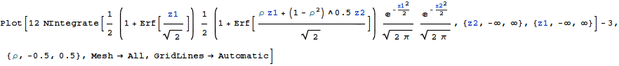
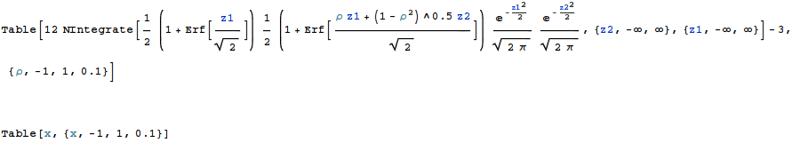
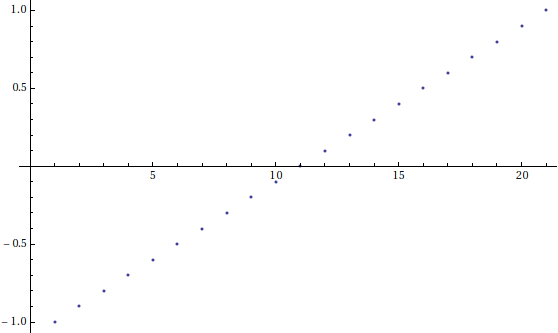

One of my colleagues had asked me this question months back. Consider 2 asset option in stochastic volatility framework. Why does stochastic volatility underestimate correlation? The question can easily be extended to n asset case. Here's my solution with some analysis in Mathematica, although I might be wrong.
I found hints to the solution in Peter Jackel's book Monte Carlo Methods in Finance.
If we consider how we generate correlated random numbers (which actually does not involve stochastic volatility at all!)
We take two random numbers between 0 and 1, and we use inverse CDF to find gaussian numbers.
We map independent gaussian numbers to correlated numbers using the age old formula of
z1, and z2c = rho x z1 + (1-rho^2)^0.5 x z2
Now we again map these new numbers back to gaussian using CDF function. What's the correlation between these two?
We believe that the correlation is rho.
I checked this in mathematica by computing the linear correlation of the below function.
Function is simply
12 * [Double Integral of CDF(z1) x CDF(z2c) x PDF(z1) x PDF(z2)] - 3
This is the standard formula for linear correlation. It's basically Spearman's rho with a joint density function.
The joint density function can be written as simple PDF(z1)*PDF(z2), as z1 and z2 are independent.
Remember z2c is correlated to z1. z1 and z2 were independent gaussians.
In[15]:=

Out[15]=


In[5]:=
The line above is not straight. It's a bit curved! So rho is not exactly mapped to the value of correlation computed from the integral Its just an approximation.

In[11]:=
These are underestimated values of rho

Out[11]=
Actual values confirm this

These were the real values taken.

In[4]:=

Out[4]=
